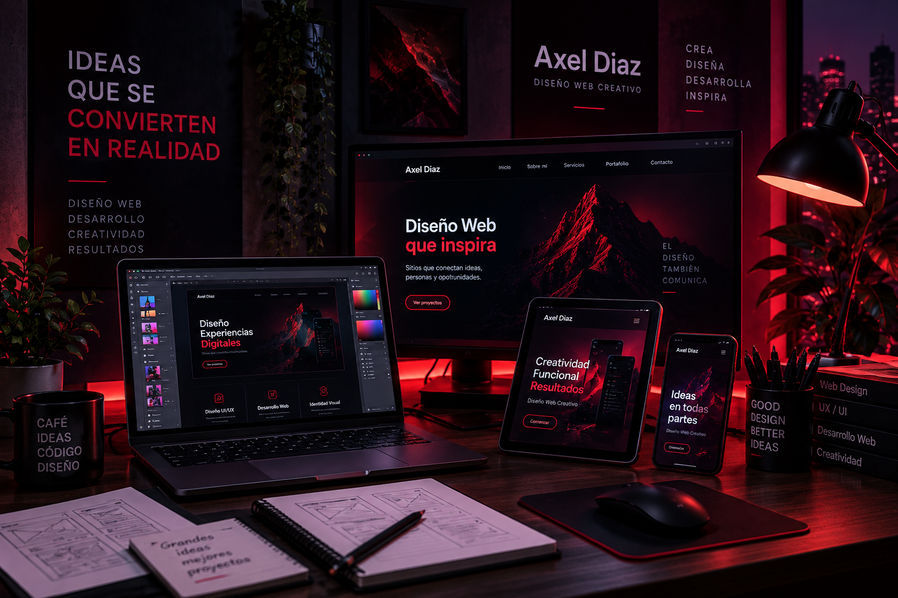
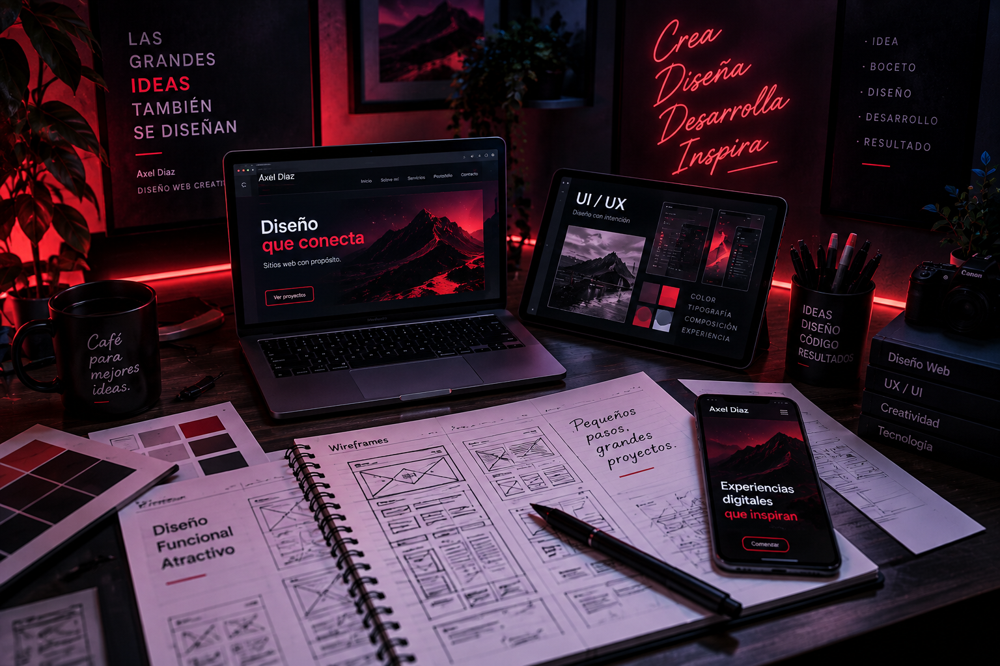
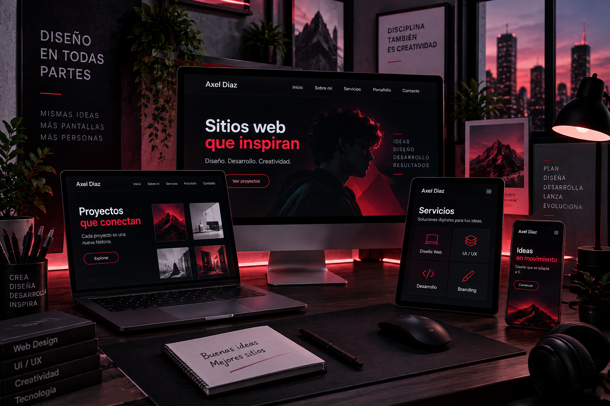
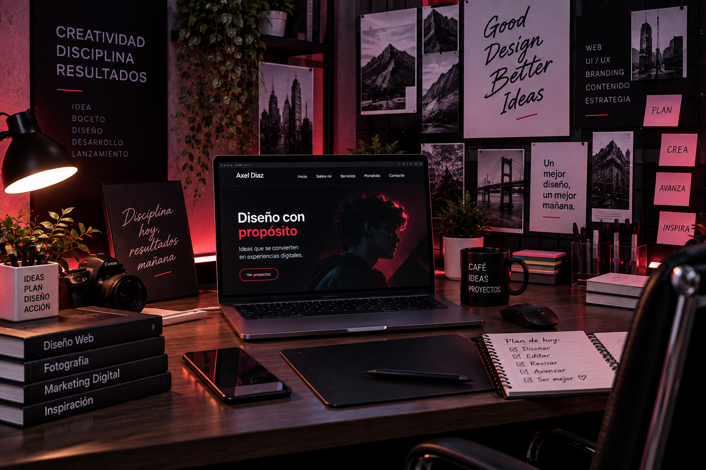
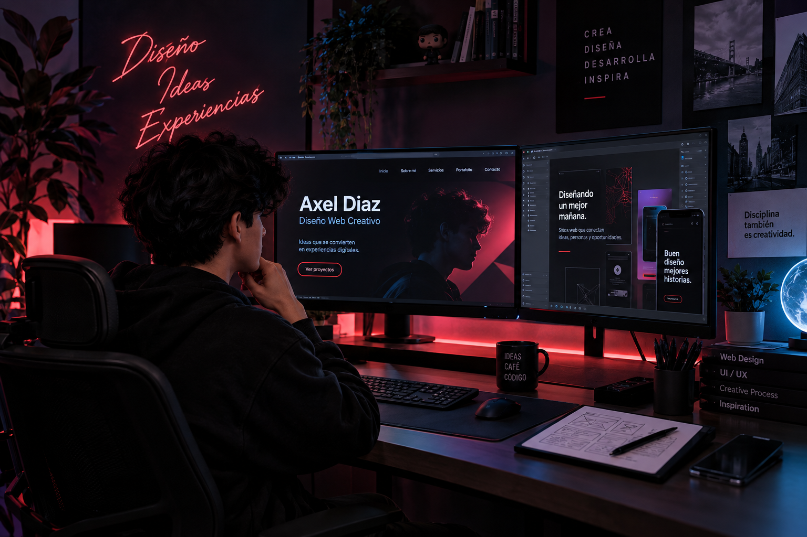

¿QUIÉN SOY?
Hola, soy Axel Diaz
Soy diseñador web y me interesa crear experiencias digitales que sean atractivas, funcionales y fáciles de utilizar.
Me gusta combinar creatividad, tecnología y diseño para transformar ideas en proyectos digitales.

MI MUNDO CREATIVO
Diseño, ideas y creatividad
Una parte importante de mi trabajo comienza mucho antes de escribir código: observar, imaginar, organizar y crear.

Proceso creativo
Las ideas comienzan con bocetos, referencias y conceptos.

Diseño responsive
Una experiencia pensada para computadora, tablet y celular.

Inspiración
Referencias, tecnología y creatividad forman parte del proceso.
MI HISTORIA
De una idea a un proyecto

Mi interés por el diseño web comenzó al descubrir cómo una idea puede convertirse en una experiencia digital.
Poco a poco fui aprendiendo herramientas de diseño, HTML y CSS, hasta encontrar una forma de combinar creatividad y desarrollo.
Cada proyecto representa una oportunidad para aprender algo nuevo y mejorar la manera de diseñar.
MI FORMA DE TRABAJAR
Ideas que siguen un proceso
Creatividad
Buscar nuevas ideas y convertirlas en propuestas visuales.
Organización
Planificar cada etapa antes de comenzar el desarrollo.
Aprendizaje
Explorar nuevas herramientas y mejorar constantemente.
Experiencia
Aprender de cada proyecto para seguir evolucionando.
DISEÑO DIGITAL
Así se ve mi proceso
El diseño no termina en una pantalla. Cada detalle forma parte de una experiencia.

Inspiración
Buscar referencias para construir una identidad visual.

De la idea a la pantalla
Convertir conceptos en interfaces digitales.

Trabajo y desarrollo
Crear, probar y mejorar hasta encontrar el resultado.
MI OBJETIVO
Crear experiencias digitales
Mi objetivo es desarrollar sitios web que no solamente se vean bien, sino que también comuniquen una idea, sean fáciles de utilizar y tengan una identidad propia.
Cada proyecto es una oportunidad para experimentar, aprender y llevar una idea un poco más lejos.
¿TIENES UN PROYECTO?
Hagamos que tu idea cobre vida
Conoce mis servicios y descubre cómo puedo ayudarte a crear una experiencia digital.